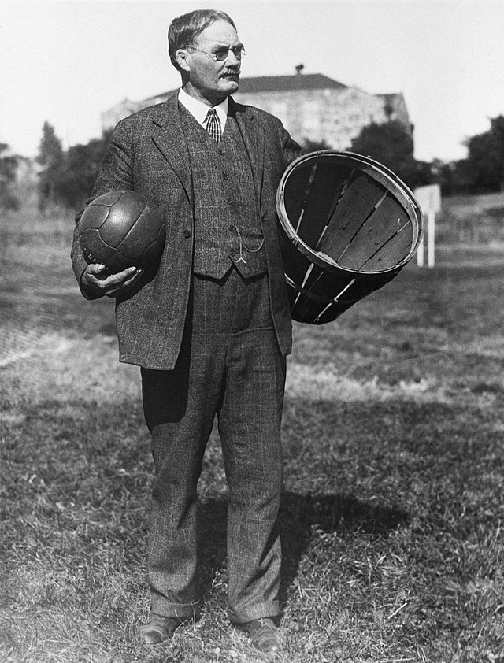
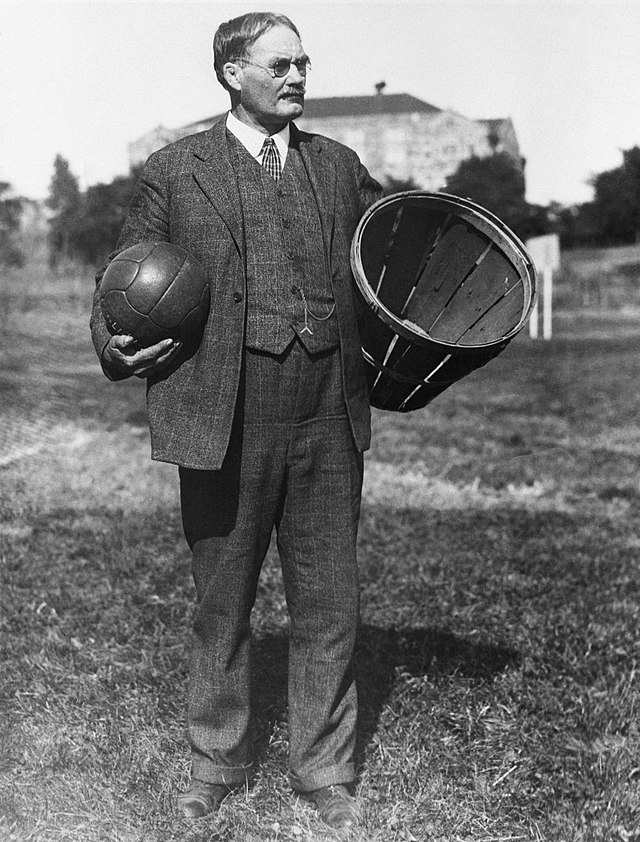

ალათბურთი პოპულარული გუნდური სპორტია, რომელსაც მართკუთხა კორტზე თამაშობს ორი გუნდი რომელიც შედგება ხუთი მოთამაშისგან. მიზანია ქულების მოპოვება მოწინააღმდეგეს კალათში ბურთის გასროლით, რომელიც 304.8cm სიმაღლეზეა დამაგრებული მოედნის ორ ბოლოში. სტანდარტული თამაში შედგება ოთხი მეოთხედისგან, თითოეული გრძელდება 10-12 წუთი. ქულები მიიღება კალათში ბურთის ჩაგდებით (2 ან 3 ქულა) ან საჯარიმო სროლით (1 ქულა). სპორტი, რომელიც გამოგონებულია 1891 წელს დოქტორ ჯეიმს ნეისმიტის მიერ, ხაზს უსვამს სისწრაფეს, სტრატეგიასა და გუნდურ მუშაობას. საერთაშორისო დონეზე იმართება კალათბურთის საერთაშორისო ფედერაციის (FIBA) და აშშ-ში საკალათბურთო ეროვნული ასოციაციის (NBA) მიერ
 
